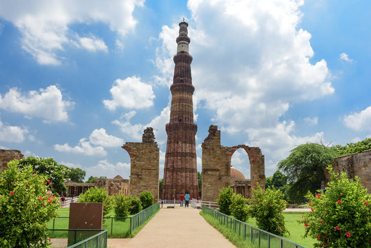

Qutub Minar

The ensemble of mosques, minars, and other structures in the Qutb Minar complex
is an outstanding testimony to the architectural and artistic achievements of Islamic
rulers after they first established their power in the Indian subcontinent in the 12th
century. The complex, located at the southern fringe of New Delhi, illustrates the new
rulers’ aspiration to transform India from Dar-al-Harb to Dar-al-Islam with the introduction
of distinctive building types and forms.
Referred to as the Qutb mosque, the Quwwatu’l-Islam, meaning the Might of Islam, introduced
to India the classic model of Islamic architecture that had developed in western Asia. The
mosque constituted a large rectangular courtyard enclosed by arcades having carved pillars
on three sides and an imposing five-arched screen marking the west. Incorporating temple
elements such as the carved pillars and cladding characteristic of Hindu and Jain temples,
it was completed by subsequent rulers – Qutb ud din Aibak and Shamsu’d-Din Iltutmish.
Drawing references from their Ghurid homeland, they constructed a minar (minaret) at the
south-eastern corner of the Quwwatu’l-Islam between 1199 and 1503, thereby completing the
vocabulary of a typical classic Islamic mosque. Built of red and buff sandstone and eloquently
carved with inscriptional bands, the Qutb Minar is the tallest masonry tower in India,
measuring 72.5 metres high, with projecting balconies for calling all Muadhdhin to prayer.
An iron pillar in the courtyard gave the mosque a unique Indian aesthetic.